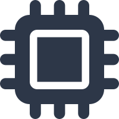
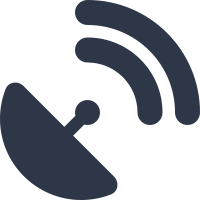
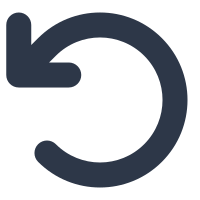

MPU6050 Real-Time Dashboard
System Status

Connection Status
Connecting...
Fall Detection
No Fall Detected

Reset Fall Indicator
Controls

Deploy Parachute
Deploy Payload
Restart Calibration
Include r Offset in Acceleration
Include Quaternion Gravity Correction
Trigger Using Absolute Accel
Absolute Accel Threshold (m/s²)
Include Known Offset Spin Correction
Known Offset
Data Export

Download Data
Accelerometer
[m/s²]
Gyroscope
[rad/s]
Calibration Loss
Orientation (Quaternion)
Offset Vector r
[m, °]
Pitch / Roll / Yaw
Filter β (Beta):
1.5